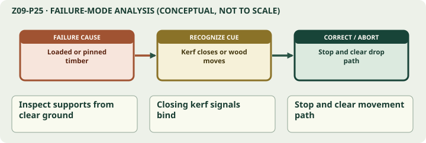

Z09-P25 · Tools and construction · New manuscript
Saw downed wood cleanly while reading top and bottom log bind
Prevent pinched saw blades and sudden log drop by identifying compression and tension sides before cutting deadfall.
When it applies · Cross-cutting small-to-medium downed deadwood on the ground for permitted fires or trail clearance.
Equipment · Sharp folding saw or bow saw, stable stance and eye awareness.

Actions
- Assess supports, slope and visible movement before touching the saw. A simple support sketch only indicates one possible load case; hidden constraints and decay can change the bind.[K05, ED]
- Leave cuts requiring bind relief, support changes or work on loaded timber to trained sawyers. If the kerf closes or wood moves, stop and clear the drop or roll area.[K05, K10]
- Keep your feet, knees and supporting hand well clear of where the cut log end will drop or roll once severed.[K05, K08]
Failure recognition · Sawing straight down through the top of a sagging log until the gap clamps shut onto the blade, bending or snapping the saw teeth.[K05, K04]
Verify · Confirm compression versus tension side before sawing, maintain an open kerf and keep feet out of the drop zone.[K05, K08, ED]
Stop or change course · Leave large-diameter logs, complex tangled blowdowns and stressed trunks untouched—they require professional sawyers and exceed camp hand-saw limits.[K05, K10]
Evidence and editorial notes
- K04 · USDA Forest Service · Handtools for Trail Work (0523-2810-MTDC) (agency handbook)
- Section: Sharpening, Filing and Handle Maintenance · Conditions: Maintaining cutting edges and wood tool handles in field or shop
Support: Secure the tool firmly before filing or honing, keep fingers behind file guards, preserve factory bevel geometry without overheating steel and replace loose or cracked handles rather than taping them.
Limitations: Field touch-up honing does not correct chipped, cracked or heat-annealed steel blades. · Conflicting evidence: None; separates routine edge maintenance from unsafe handle patching.
Editorial note: Guides sharpening, rust prevention and handle-failure retirement cards. · Specialist reviewer: Tool maintenance and forestry safety
Primary source · checked 2026-11-24 - K05 · USDA Forest Service · Handtools for Trail Work PDF (agency PDF)
- Section: Sawing, Splitting and Lever Principles · Conditions: Cutting downed wood, clearing deadfall and moving heavy logs safely
Support: Assess bind and tension in fallen logs before cutting so saws do not pinch or limbs spring back; use solid levers and fulcrums safely without standing in the recoil path of strained timber.
Limitations: Complex storm-damaged or hung-up trees require professional sawyers and are outside camp tool scope. · Conflicting evidence: None; informs spring-pole, saw-bind and lever mechanical-advantage cards.
Editorial note: Prevents kickback, saw pinching and recoil injuries in Z09. · Specialist reviewer: Forestry tool safety and mechanical safety
Primary source · checked 2026-11-24 - K08 · OSHA · Hand and Power Tools (OSHA 3080) (agency PDF)
- Section: Personal Protective Equipment and Work Area Control · Conditions: Cutting, splitting, striking and rigging operations
Support: Maintain stable footing, eye and hand protection appropriate to flying chips or snapped cordage, and clear bystanders outside the swing or snap-back zone.
Limitations: Field kits often lack shop PPE, requiring slower conservative technique and lower-energy methods. · Conflicting evidence: None; drives snap-back and work-circle exclusion zones in Z09.
Editorial note: Enforces conservative work circles and snap-back clearance. · Specialist reviewer: Tool safety and occupational safety
Primary source · checked 2026-11-24 - K10 · USDA Forest Service · Handtools for Trail Work PDF (agency PDF)
- Section: Felling and Overhead Timber Exclusions · Conditions: Camp wood preparation and trail clearing
Support: Do not fell standing trees or work beneath hung-up limbs without specialized training and gear; restrict routine camp woodworking to small sound downed deadwood where lawful.
Limitations: Standing dead trees (snags) fail unpredictably under vibration or wedging. · Conflicting evidence: Aligns with E13 and C17.
Editorial note: Reinforces strict downed-wood-only woodworking boundary. · Specialist reviewer: Forestry safety and land management
Primary source · checked 2026-11-24
Source lineage · USFS trail handtools; new manuscript · Classification · New manuscript.